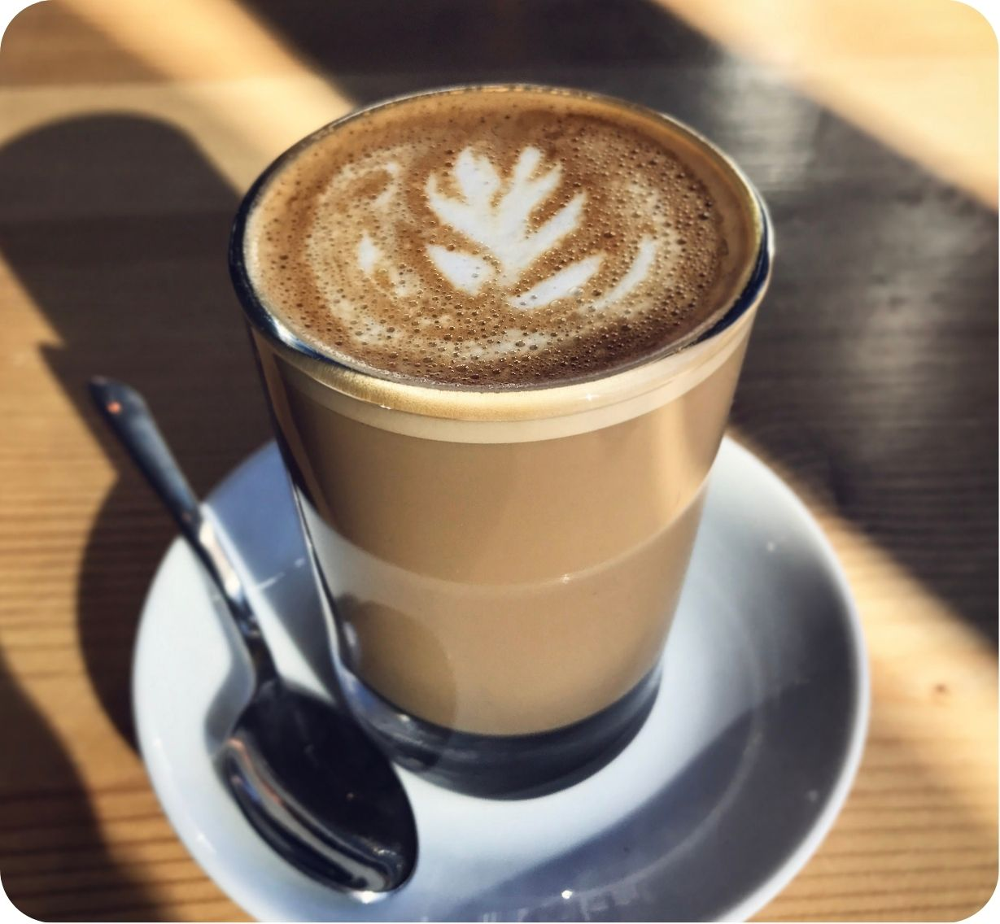
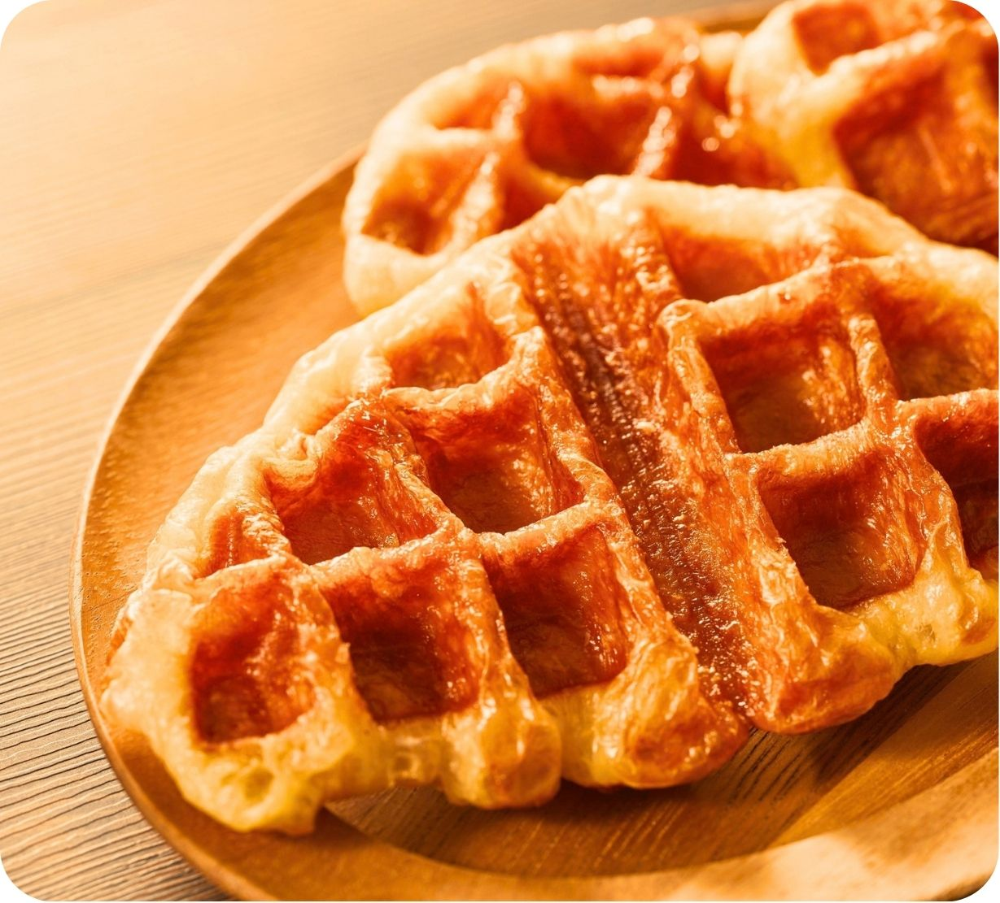
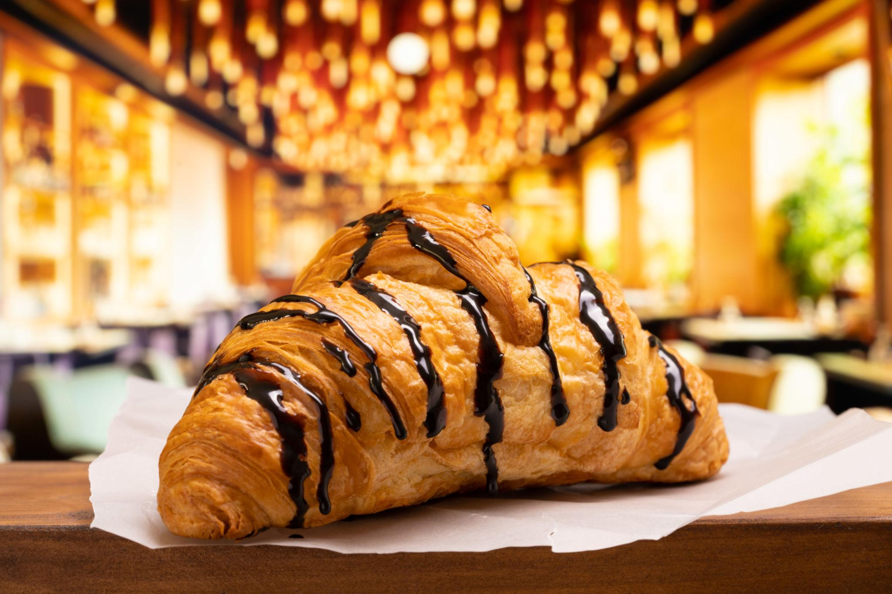

Seu momento especial começa com um bom café
Descubra cafés especiais, bebidas artesanais e sabores preparados para transformar seus momentos.
Conheça nosso cardápioNosso Cardápio
Explore nossa seleção de cafés especiais e acompanhamentos preparados com ingredientes selecionados para proporcionar uma experiência única.

Espresso
Uma dose de café especial, com aroma marcante, sabor intenso e uma crema delicada.

Cappuccino
Café espresso combinado com leite vaporizado e uma cremosa camada de espuma.

Brownie
Brownie artesanal com textura macia, interior úmido e sabor intenso de chocolate.

Waffle
Waffle artesanal feito com cobertura de mel.

Cheesecake
Um delicioso cheesecake com coberturade de morango

Croissant
Um croissant artesanal, leve e crocante, perfeito para acompanhar seu café.
Nossa história, sua experiência
O Grão & Prosa nasceu da paixão pelo café e pelo prazer de compartilhar bons momentos. Acreditamos que cada xícara conta uma história, por isso selecionamos nossos ingredientes e preparamos cada bebida com dedicação e cuidado.
Venha viver essa experiência.
Estamos esperando por você! Venha conhecer nosso espaço, experimentar nossos cafés especiais e aproveitar momentos únicos.
Endereço: Rua dos Cafés, 125 — Centro.
Horário: Segunda a sábado, das 08h às 19h.